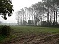

drizzle

Definition: Drizzle is a light precipitation consisting of liquid water drops smaller than those of rain – generally smaller than 0.5 mm (0.02 in) in diameter. Drizzle is normally produced by low stratiform clouds and stratocumulus clouds. Precipitation rates from drizzle are on the order of a millimetre (0.04 in) per day or less at the ground. Owing to the small size of drizzle drops, under many circumstances drizzle largely evaporates before reaching the surface and so may be undetected by observers on the ground. The METAR code for drizzle is DZ and for freezing drizzle is FZDZ.
Source: Wikipedia
Wikipedia Page
Wikidata Page